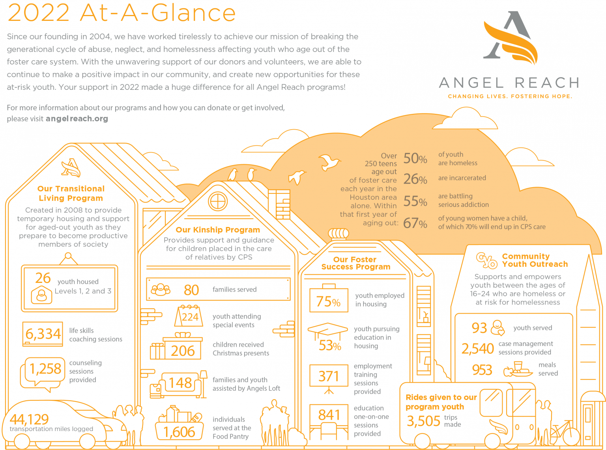

Welcome
Angel Reach is a faith-based nonprofit organization that works with young adults ages 16-24 who have aged out of the foster care system and/or who are homeless. Many of these youth feel lost and alone. They are now on their own and have no place to live. They need our support to help them find their way to becoming emotionally stable and financially independent. Angel Reach is also a ministry that supports families who care for children removed from their homes by Children’s Protective Services (CPS).
Our Mission Statement
“Angel Reach breaks the generational cycle of abuse, neglect, and homelessness by equipping homeless and aged-out foster youth to live independently, as well as providing critical services and support to relatives serving as caregivers.”
Different Programs
Angel Reach has been dedicated to the continued development of programs that prevent homelessness for foster care alumni since 2004. A 501c3 non-profit organization located in Conroe, Texas. Angel Reach was founded as a ministry to serve Kinship families and their children. Through the years our focus has expanded to now include three client types:
- Kinship Program:
Children who have been removed from their home because of neglect or abuse who live with a relative
- Transitional Living Program:
Young adults ages 16-24 who have aged-out of foster care that are homeless or at risk of being homeless
- Community Youth Outreach(CYO):